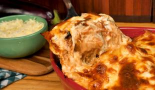

Lasanha de biringela

Descrição
Confira com a gente essa deliciosa receita de lasanha de berinjela! Uma opção perfeita para quem não come carne ou está cansado dos mesmos recheios e quer
experimentar um sabor diferente!
Ingredientes
- 3 berinjelas grandes
- 1 maço de coentro cortado em pedaços pequenos
- 300 g de queijo mussarela fatiado
- 2 colheres de azeite
- 1 lata de molho de tomate
- azeitonas sem caroço cortadas
- 300 g de presunto fatiado
- queijo catupiry
Modo de preparar
Preparo em aproximadamente 40min
- Corte as berinjelas em fatias finas, no sentido do comprimento.
- Em uma assadeira retangular refratária, coloque no fundo, as duas colheres de azeite e um pouco de molho de tomate.
- Coloque então uma camada de berinjela.
- Cubra com molho de tomate, salpique com azeitonas e coentro.
- Em seguida, coloque uma camada de presunto.
- Acrescente uma camada de berinjela, cubra com molho de tomate e por cima coloque uma camada de queijo mussarela.
- Repita os passos 3, 4 e 5, para formar mais duas camadas.
- Coloque por cima da última camada, queijo catupiry a gosto, e cubra a assadeira com papel alumínio.
- Leve ao forno em temperatura de 180º C graus por cerca de 30 minutos, para cozinhar.
- Após isso, retire o papel-alumínio e deixe por mais 5 a 10 minutos para gratinar.
- Sirva quente.
Para retornar ao o menu de receitas clique AQUI